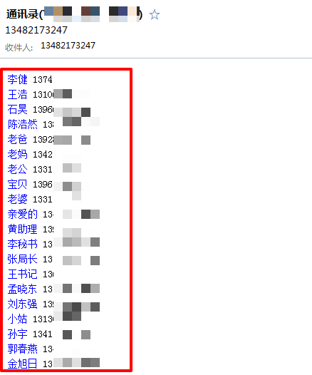

某android蠕虫木马病毒分析
偶然机会得来一个应用，运行起来后发现桌面图标没了觉得很是可疑，所以花了点时间分析了一下。以下暂用
sample样本指代。
经过行为分析，sample样本会获取用户手机联系人以及短信并上传至收信邮箱：13482173247@163.com。 会执行指定手机发来的短信命令（来信号码中包含3247或288时便会执行其中的短信指令。已知的控制者手机号码为: 13482173247）。最后判定sample为一款典型的Android平台的短信拦截木马。
伪装成中国移动客户端,在初次启动时设置自身为设备管理器以防止自身被卸载。其中利用了设备管理器的一个漏洞，导致用户无法取消激活该样本，从而达到不被卸载的目的。
受害情况分析
通过代码的分析，从中提取出了加密后的发信邮箱和密码：
账户：13482173247@163.com 密码：uodlmxxxxxxxesjzx
经过对以上邮箱的登录验证，该邮箱内有近两千两百多份邮件：
邮件内的联系人信息

邮件内的短信内容
// 其中包含大量网银或个人账户的验证码短信
传播途径分析
从多个用户上报的短信内容发现了疑似10086积分钓鱼短信，通过对邮件的批量扫描提取出了共计54个疑似钓鱼站点，根据域名格式可以推断出这些站点为同源或同宗(绝大部分已无法访问，大部分钓鱼域名已经变为了小说网)：
wap.10086pqs.com
wap.10086hxy.com
wap.10086pxb.com
10086nuf.com/b
wap.10086bapd.com
wap.10086fsx.com
www.10086df.pw
wap.10086pbc.com
www.10086owq.cn
wap.10086iwrz.com
wap.10086ufs.com
wap.10086vsg.com
wap.10086taj.com
wap.10086hqv.com/d
wap.10086syk.com
10086nvgw.com
wap.10086fwz.com
wap.10086hjz.cc
wap.10086sfq.com
wap.10086ikjq.com
10086xpd.com
10086mqw.com
10086nub.com
wap.10086ybn.com
www.10086znt.com
www.10086ice.com
wap.10086dg.com
wap.10086fzw.com
wap.10086hda.com
www.10086io.com
wap.10086fzq.com
wap.10086mky.com
wap.10086mrd.com
wap.10086abedk.com
wap.10086ycxl.com
wap.10086byxt.com
10086ufw.com
wap.10086xbr.com
jfd.10086airx.com
wap.10086zvp.com
10086gph.com
wap.10086yca.com
10086ydgh.com
wap.10086yf.com
wap.10086vdw.com
wap.10086qna.com
10086qce.com
wap.10086vac.com
jfe.10086ncb.com
wap.10086vha.com
wap.10086vwy.com
wap.10086nry.com
wap.10086gus.com
www.10086kdj.com
并且根据收信邮箱内的邮件格式可以推断，该邮箱的收信来源样本至少还有另外1个变种正处于活跃期。并且根据网络上的同类样本分析文章，此类型样本至少有不下3个变种：
AVL Team: http://blog.avlyun.com/?p=2634 看雪论坛: http://bbs.pediy.com/showthread.php?t=209408

样本具体行为
首次启动注册自身为设备管理器，并且在onDisableRequested中启动Setting为最顶层Activity并阻塞函数使其无法返回。最后迫使“Device administrators”被覆盖或导致Setting崩溃退出,让用户无法对其“取消激活”从而保护其不被卸载。利用了Android设备管理器漏洞: ANDROID-9067882
首先使用DES解密邮件账户和密码,key: staker
通过邮件上报安装成功的消息

遍历手机内所有短信,并上传至邮箱
遍历手机内所有联系人,并上传至邮箱
随后启动后台Service监听和拦截短信
接收远程短信命令
其中当短信发送方号码包含3247或288时(其中已知黑客使用的号码之一: 13482173247), 开始接收并执行命令:
ADD %PHONE_NUMBER% # 开始拦截"指定发件人"
DEL %PHONE_NUMBER% # 不再拦截"指定发件人"
CLEAR ALL # 不再拦截"任何发件人"
LOOK [TIME|PHONE] # **TIME**: 向控制端以短信返回"到期时间"(这里到期时间的概念为:在到达一定天数后会停止拦截, 否则长期无法正常接收短信会引起被控用户的警觉.) **PHONE:** 向黑客以短信返回 "手机型号+手机品牌+Android版本"
SEND %TARGET_NUMBER% %SMS_CONTENT% # 以被控手机身份发送指定内容短信
清除方法
由于sample样本在被“取消激活”设备管理器时会弹出Activity进行阻碍，导致无法最终弹出取消确认框。清除方法是通过intent调用启动到取消窗口，直接“取消激活”。取消后可正常对其进行卸载。
总结
经过以上分析，该样本是一个典型的利用短信群发进行传播的且具有远控功能的蠕虫木马，该木马通过设备管理器漏洞来阻止自身被用户清除。在分析过程中可以看到，已经有相当多的受害者遭到攻击，并且部分用户可能由于短信验证码被失窃造成了银行卡被盗刷等经济损失，最后已将该样本提交至了多个安全软件及团队，也希望能够及时介入止损降低受害者损失。最后想跟作者说一句：莫伸手，警察叔叔溯源抓人很容易。